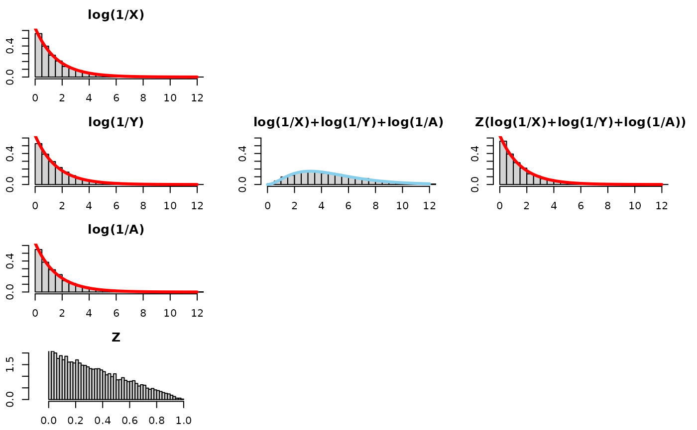
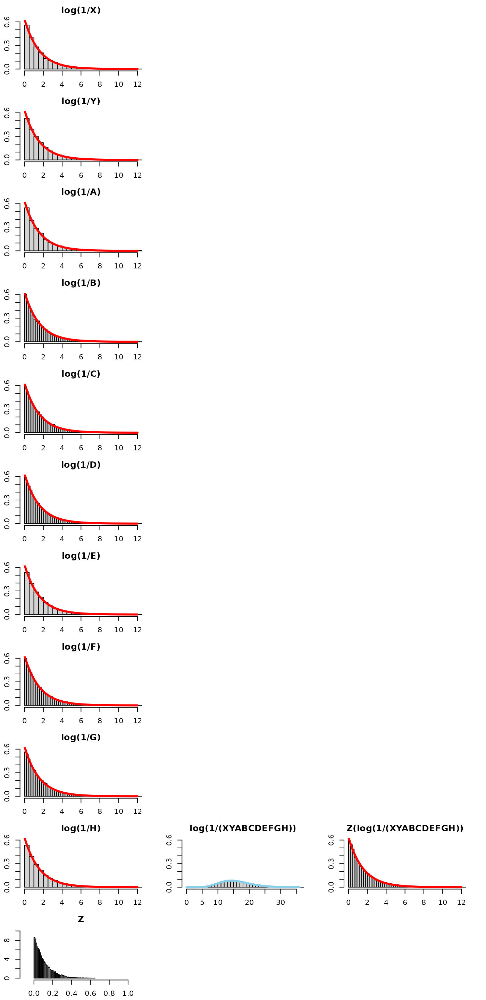

(XY)^Z Part I
Bruce J. Swihart
2025-05-16
Source:vignettes/articles/xy_to_the_z_part_i.Rmd
xy_to_the_z_part_i.RmdIN PROGRESS
I’m about 8 months late to the party, but a challenge problem from 3blue1brown caught my attention, as well as a call for intuitive approaches to explaining the result.
Here’s the challenge mode for all you math whizzes. Sample three numbers x, y, z uniformly at random in [0, 1], and compute (xy)^z. What distribution describes this result?
Answer: It’s uniform!
I know how to prove it, but haven’t yet found the “aha” style explanation where it feels expected or visualizable. If any of you have one, please send it my way and I’ll strongly consider making a video on it.
– Grant Sanderson of 3blue1brown, 2024-09-10
The result and good explanations of the result have been around for a while, as shown in this Math SE post from 2012.
This response
video by Dr Mihai Nica has an explanation that is similar to the one
on this page and connects it to Poisson processes and some other
statistical results. I focus more on visualizing the distributions and
thinking of the result in terms of convolution and scale mixture, which
should be no surprise given these are commonly used in the underlying
theory of mvpd. I also generalize the result, showing that
the original problem is a specific instance of the more general
result.
Restatement of the Relations
We generalize X, Y being iid Beta(, 1) (which for is U(0,1)) and restate the result for the quantity . We then consider a similar quantity as well. For each quantity we build intuition by thinking through the distributions on the log-scale.
For iid Beta(, 1) and independent
Result 1:
-
Beta(,
1)
- Which implies ReflectedExp()
Result 2:
-
Pareto(,
)
- Which implies Exp()
Special instance: For , and U(0,1) (because Beta(1, 1) is U(0,1)).
Sanity check: Result 1
Lets do a number of simulations and then plot the quantities to see the theory in action for Beta(, 1). We’ll plot the theoretical result in purple on top of the histogram. First for , the special uniform instance (because that is what started it all!) and as an arbitrary value bigger than 1 and as an arbitrary value smaller than 1.
alpha = 1
set.seed(1)
nsims <- 1e4
aa_x <- 1
aa_y <- 1
x <- rbeta(nsims,aa_x,1) ##runif(nsims,0,1)
y <- rbeta(nsims,aa_y,1) ##runif(nsims,0,1)
z <- runif(nsims,0,1)
hist((x*y)^z, breaks=50, freq=FALSE, xlim=c(0,1))
lines( seq(0,1,0.01),
dbeta(seq(0,1,0.01),aa_x,1),
type="l",
col="purple"
)
hist(x, freq=FALSE, breaks=50, xlim=c(0,1))
lines( seq(0,1,0.01),
dbeta(seq(0,1,0.01),aa_x,1),
type="l",
col="purple"
)
## compare mean, variance, and 2nd moment
prod <- (x*y)^z
mean(prod)
#> [1] 0.5000949
var(prod)
#> [1] 0.08372655
var(prod) + mean(prod)^2
#> [1] 0.3338215
mean(x)
#> [1] 0.501578
var(x)
#> [1] 0.0843729
var(x) + mean(x)^2
#> [1] 0.3359534


Log-scale for intuition building
Consider the log scale, which changes the relation from a product raised to a power into a sum multiplied by a number. In other words, a convolution (sum of two random variables) and a scale mixture (then multiplied by a random variable).
We will visualize this using 5 plots arranged in a 3x3 grid. The left column will show the distributions of each of the 3 components of consideration (log(X), log(Y), and Z), the middle column will just show the convolution of log(X) and log(Y), that is to say log(X)+log(Y), and the third one will show the scale mixture applied to the convolution.
Take a look at this for alpha=1:

Quick observations –
- log(X): is a Reflected Exponential with rate , as is log(Y) and Z(log(X)+log(Y))!
- log(X) + log(Y): the convolution (i.e., sum) of two Reflected Exponentials is more disperse and squattier than just one Reflected Exponential. We know this already – think of adding two normals together and the variance of the resultant Normal having the sum of the variances of the original normals.
- Z(log(X)+log(Y)): to “recover” or “get back to” the original distribution before the convolution, log(X), we need to “tighten” or “gather” or “concentrate” the log(X)+log(Y) distribution. Multiplying it by a random number between 0 and 1 will do exactly that.
See for other values for alpha:


Sanity check: Result 2
Lets do a number of simulations and then plot the quantities to see the theory in action for Pareto(, ). We’ll plot the theoretical result in purple on top of the histogram. First for , the special uniform instance (because that is what started it all for Result 1!) and as an arbitrary value bigger than 1 and as an arbitrary value smaller than 1.
alpha = 1.000
set.seed(1)
nsims <- 1e4
aa_x <- 1
aa_y <- 1
x <- rbeta(nsims,aa_x,1) ##runif(nsims,0,1)
y <- rbeta(nsims,aa_y,1) ##runif(nsims,0,1)
z <- runif(nsims,0,1)
hist((1/x*1/y)^z, breaks=2*500, freq=FALSE, xlim=c(0,100), ylim=c(0,0.5))
lines( seq(0,100,0.01),
LNPar::dpareto(seq(0,100,0.01),1,alpha=aa_x),
type="l",
col="purple"
)
hist(1/x, freq=FALSE, breaks=2*3000, xlim=c(0,100), ylim=c(0,0.5))
lines( seq(0,100,0.01),
LNPar::dpareto(seq(0,100,0.01),1,alpha=aa_x),
type="l",
col="purple"
)
## compare mean, variance, and 2nd moment
prod <- (1/x*1/y)^z
mean(prod)
#> [1] 8.878238
var(prod)
#> [1] 4277.258
var(prod) + mean(prod)^2
#> [1] 4356.082
mean(1/x)
#> [1] 10.28434
var(1/x)
#> [1] 32794.94
var(1/x) + mean(1/x)^2
#> [1] 32900.71


Log-scale for intuition building
Consider the log scale, which changes the relation from a product raised to a power into a sum multiplied by a number. In other words, a convolution (sum of two random variables) and a scale mixture (then multiplied by a random variable).
We will visualize this using 5 plots arranged in a 3x3 grid. The left column will show the distributions of each of the 3 components of consideration (log(X), log(Y), and Z), the middle column will just show the convolution of log(X) and log(Y), that is to say log(X)+log(Y), and the third one will show the scale mixture applied to the convolution.
Take a look at this for alpha=1:

Quick observations –
- log(X): is an Exponential(), as is log(Y) and Z(log(X)+log(Y))!
- log(X) + log(Y): the convolution (i.e., sum) of two Exponentials is more disperse and squattier. We know this already – think of adding two normals together and the variance of the resultant Normal having the sum of the variances of the original normals.
- Z(log(X)+log(Y)): to “recover” or “get back to” the original distribution before the convolution, log(X), we need to “tighten” or “gather” or “concentrate” the log(X)+log(Y) distribution. Multiplying it by a random number between 0 and 1 will do exactly that.
See for other values for alpha:

Follow-up questions
Follow up questions means we can explore more. This was a top comment on the response video linked in the intro:
@JobBouwman 8 months ago Adding two exponentials will double the outcome. Then multiplying this with a random uniform scalar between 0 and 1 will on average half the result.
This comment in addition to the video helped inspire this document. The comment in particular inspired two questions of mine.
- Q: Why “1/2 on average” and not just “1/2 all the time” no variation?
Let’s see what the resultant Z(log(1/X)+log(1/Y)) distribution would
look like if we replaced z<-runif(nsims, 0, 1) with
z <- rep(1/2, nsims) in the code. We will see it
“concentrates” too much and doesn’t recover the distribution of
log(1/X).

- Q: Ok, so Z has to be random. But can it be 1/2 but with bounds bigger than 0,1 ?
Let’s see what the resultant Z(log(1/X)+log(1/Y)) distribution would
look like if we replaced z<-runif(nsims, 0, 1) with
z<-runif(nsims, -1, 2) in the code. The mean of Z is
1/2. However, Z is not bounded between 0 and 1. Hypothesis: even though
this Z will “1/2 on average” it fails to recover the distribution
log(1/X) because Z values bigger than 1 fail to “tighten” the
distribution. Compounding the problem is that Z values below 0 (negative
values) flip/reflect values across the y-axis. See below:

So far we have considered cases where the alpha for X and Y are the same and how multiplying (log(1/X)+log(1/Y)) by Z allows one to recover the original distribution of log(1/X) (equivalently, log(1/Y)). However, if , multiplying (log(1/X)+log(1/Y)) by a uniform would not recover the distribution for either log(1/X) or log(1/Y) – it would be a distribution “in-between” those two distributions – but not an Exponential with an alpha between and . We consider this “unequal alpha” as a bonus case below.
Bonus: Unequal alpha cases
Firstly, one may want to consult Wikipedia.
There’s no one distribution to recover since , so trying different distributions for leads to different blends of the X,Y distributions:
Z distributed as U(0,1)
- U(0,1)
- mathematica says I need incomplete gamma. luckily vincent goulet made one for R.
- page 80 green notebook
Bonus: What about 3 exponentials?
Let’s see what the resultant Z(log(1/X)+log(1/Y)+log(1/A)) distribution would look like.

It looks like we need more tightening. Let’s tinker. Instead of
multiplying by 1/2 on average, perhaps we need to multiply by 1/3 on
average? Let’s leave Z as a uniform, with positive values smaller than 1
that average to a 1/3. Let’s replace
z<-runif(nsims, 0, 1) with
z<-runif(nsims, 0, 2/3) in the code:
#> [1] 0.333627
While that was fun, this modification (shortening the range of the uniform) does not quite seem to “recover” the distribution of log(1/x).
This is where turning to theory might save us some time.
The sum of 3 iid Exponential() variables will be distributed as Gamma(3,alpha).
If Q ~ Gamma(3,alpha) then what do we multiply by Q to get an exponential? A: P
A Gamma distribution times a Gamma distribution will result in an exponential distribution if the shape parameter of both Gamma distributions is 1, and their rate parameters are the same. In other words, if X ~ Gamma(1, λ) and Y ~ Gamma(1, λ), then their product X*Y ~ Exponential(λ).
And
Solution: cannot be transformed into . is equal to .
One can tinker and see how close they can get but the theory says it will be inexact.
#> [1] 0.4998502
Miscellany / Notes to self / Stubs for future ideas
Looking at the inductive form, may provide insight as to why Z may not have a “recovering” distribution for a sum of more than 2 exponentials.